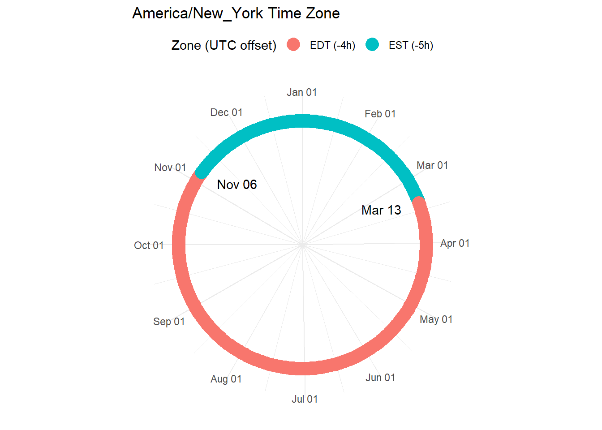
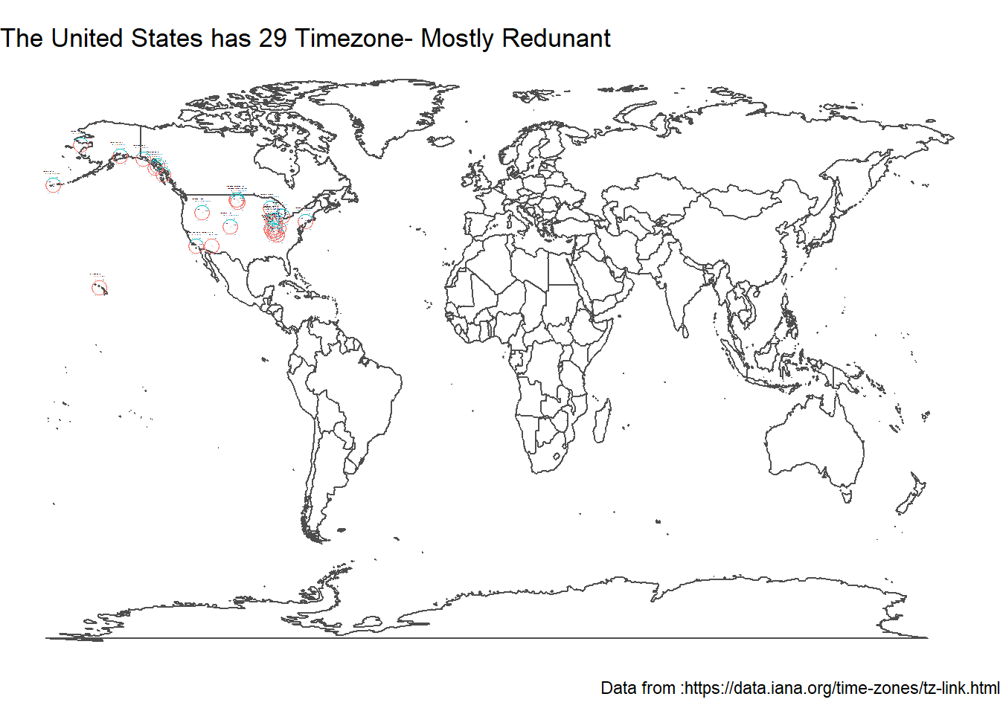

library(tidytuesdayR)
library(tidyverse)
library(skimr)
library(ggthemes)
library(gt)
library(lubridate)
library(skimr)
library(lutz)
library(maps)
library(scales)
library(sf)
library(ggimage)Tidy Tuesday: Daylight Savings Time
R
TidyTuesday
R-code
Code-Along
Data-Viz
ggimage
maps
TidyTuesday: Exploring Time Zones and Daylight Savings Time
This week’s TidyTuesday is about the timezone data from IANA timezone database.
The history of this database is fascinating. It is used by many computer systems to determine the correct time based on location. To learn more, I recommend reading Daniel Rosehill’s article on the topic. For a drier history, check out the wikipedia article.
# Get the Data
# Read in with tidytuesdayR package
# This loads the readme and all the datasets for the week of interest
# Either ISO-8601 date or year/week works!
#tuesdata <- tidytuesdayR::tt_load('2023-03-21')
tuesdata <- tidytuesdayR::tt_load(2023, week = 13)
transitions <- tuesdata$transitions
timezones <- tuesdata$timezones
timezone_countries <- tuesdata$timezone_countries
countries <- tuesdata$countriesIt is suggested that we change the begin and end variables in transitions to datetimes.
transitions <- transitions %>%
mutate(begin = as_datetime(begin), end = as_datetime(end))I was interested in how many countries had multiple times zones. I know the US has 4 time zones in the continental US.
num_zones <- timezone_countries %>%
count(country_code, sort = TRUE)
num_zones %>%
filter(n > 1) %>%
left_join(countries) %>%
select(place_name, n) %>%
filter(place_name != "NA") %>%
gt() %>%
cols_label(place_name = "Country", n = "Number of TZs") %>%
opt_stylize(style = 6, color = "blue", add_row_striping = TRUE) %>%
tab_header(title = "Countries with Multiple TZs") | Countries with Multiple TZs | |
| Country | Number of TZs |
|---|---|
| United States | 29 |
| Canada | 28 |
| Russia | 27 |
| Brazil | 16 |
| Argentina | 12 |
| Australia | 12 |
| Mexico | 11 |
| Kazakhstan | 7 |
| Greenland | 4 |
| Indonesia | 4 |
| Ukraine | 4 |
| Chile | 3 |
| Spain | 3 |
| Micronesia | 3 |
| Kiribati | 3 |
| Mongolia | 3 |
| Malaysia | 3 |
| French Polynesia | 3 |
| Portugal | 3 |
| US minor outlying islands | 3 |
| Congo (Dem. Rep.) | 2 |
| China | 2 |
| Cyprus | 2 |
| Germany | 2 |
| Ecuador | 2 |
| Marshall Islands | 2 |
| New Zealand | 2 |
| Papua New Guinea | 2 |
| Palestine | 2 |
| French Southern & Antarctic Lands | 2 |
| Uzbekistan | 2 |
| Vietnam | 2 |
And we find that the United States has 29!! time zones in the database. This was unexpected, so say the least. I thought maybe there were some times zones for territories and perhaps military bases that I did not know about. I also thought there might be some extra time zones arising from some states using daylight savings time, while others in the same area might not. I wanted to visualize where these times zones were.
US_tz <- timezone_countries %>%
filter(country_code == "US") %>%
left_join(timezones)Joining with `by = join_by(zone)`I found the lutz package created nice pictograms about when a timezone shifts from DST and back. (This package uses the same underlying database that we are using here to determine when the shifts occur.)
tz_plot(US_tz$zone[21])
I created the plots and saved them as images. I modified a function I found on stack overflow to create the file names.
wd <- getwd()
filepath = file.path(wd)
make_filename = function(number){
# doing this, putting it all on a single line or using pipe %>%
# is just matter of style
filename = paste("tzplot", number, sep="_")
filename = paste0(filename, ".png")
filename = file.path(filepath, filename)
filename
}
#creating a variable to store the files name
US_tz <- US_tz %>%
mutate(image_name = "tbd")
index <- 1
for (index in seq(1, nrow(US_tz))) {
filename = make_filename(index)
US_tz[index , "image_name"] <- filename
# 1. Open jpeg file
png(filename, width = 350, height = 350, bg = "transparent")
# 2. Create the plot
# you need to print the plot if you call it inside a loop
print(tz_plot(US_tz$zone[index]))
# 3. Close the file
dev.off()
index = index + 1
}Next I created a world map, inspired by the one from
My submission for #TidyTuesday, Week 13 on time zones. I plot time zones in the world map.
Code: https://t.co/y5Cm4tuaVk pic.twitter.com/BZC3anC5Oa— Mitsuo Shiota (@mitsuoxv) March 28, 2023
I hadn’t previously used the maps package, so I appreciate being introduced to it. The maps package only has a mainland US map, so I used the world map. (Plus, as I mentioned, I thought some of these time zones would be in other parts of the world.) I followed a tutorial on Plotting Points as Images in ggplot and used the hints about aspect ratio to make my tz_plot circles remain circular. However, that did stretch the world a bit.
aspect_ratio <- 1.618
us_tz_map <- map_data("world") %>%
ggplot(aes(long, lat)) +
geom_polygon(aes(group = group), fill = "white",
color = "gray30", alpha = 0.9) +
geom_image(aes(x = longitude, latitude, image = image_name),
data = US_tz, size = 0.025, by = "width",
asp = aspect_ratio) +
coord_sf() +
labs(title = "The United States has 29 Timezone- Mostly Redunant",
caption = "Data from: https://data.iana.org/time-zones/tz-link.html") +
theme_void() +
theme(aspect.ratio = 1/aspect_ratio,
legend.position = "bottom",
plot.background = element_rect(fill = "white", color = "white")
)
ggsave("thumbnail.png", us_tz_map, width = 5 * aspect_ratio, height = 5)
us_tz_map
And what we see is there are a bunch of redundant times zone specification, especially in the Midwest.
US_tz %>%
select(zone, latitude, longitude) %>%
arrange(longitude) %>%
gt() %>%
opt_stylize(style = 6, color = "blue", add_row_striping = TRUE) %>%
tab_header(title = "Countries with Multiple TZs") | Countries with Multiple TZs | ||
| zone | latitude | longitude |
|---|---|---|
| America/Adak | 52.66667 | -177.13333 |
| America/Nome | 64.56667 | -165.78333 |
| Pacific/Honolulu | 21.71667 | -158.35000 |
| America/Anchorage | 61.30000 | -149.91667 |
| America/Yakutat | 60.35000 | -140.35000 |
| America/Sitka | 57.75000 | -135.41667 |
| America/Juneau | 58.41667 | -134.60000 |
| America/Metlakatla | 55.73333 | -132.15000 |
| America/Los_Angeles | 34.18333 | -118.80000 |
| America/Boise | 44.41667 | -116.35000 |
| America/Phoenix | 34.33333 | -112.46667 |
| America/Denver | 40.08333 | -105.03333 |
| America/North_Dakota/Beulah | 48.10000 | -102.43333 |
| America/North_Dakota/Center | 48.08333 | -102.23333 |
| America/North_Dakota/New_Salem | 47.53333 | -102.05000 |
| America/Menominee | 45.56667 | -88.45000 |
| America/Indiana/Vincennes | 39.30000 | -88.23333 |
| America/Indiana/Petersburg | 39.00000 | -87.98333 |
| America/Chicago | 41.85000 | -87.65000 |
| America/Indiana/Tell_City | 38.13333 | -87.43333 |
| America/Indiana/Knox | 42.03333 | -87.11667 |
| America/Indiana/Marengo | 38.90000 | -87.01667 |
| America/Indiana/Winamac | 41.13333 | -86.78333 |
| America/Indiana/Indianapolis | 39.86667 | -86.63333 |
| America/Kentucky/Louisville | 38.50000 | -86.31667 |
| America/Kentucky/Monticello | 37.60000 | -85.78333 |
| America/Indiana/Vevay | 39.60000 | -85.10000 |
| America/Detroit | 43.20000 | -83.78333 |
| America/New_York | 41.55000 | -74.38333 |
Citation
BibTeX citation:
@online{e. sinks2023,
author = {E. Sinks, Louise},
title = {Tidy {Tuesday:} {Daylight} {Savings} {Time}},
date = {2023-03-28},
url = {https://lsinks.github.io/posts/2023-03-28-tidytuesday-timezones/},
langid = {en}
}
For attribution, please cite this work as:
E. Sinks, Louise. 2023. “Tidy Tuesday: Daylight Savings
Time.” March 28, 2023. https://lsinks.github.io/posts/2023-03-28-tidytuesday-timezones/.